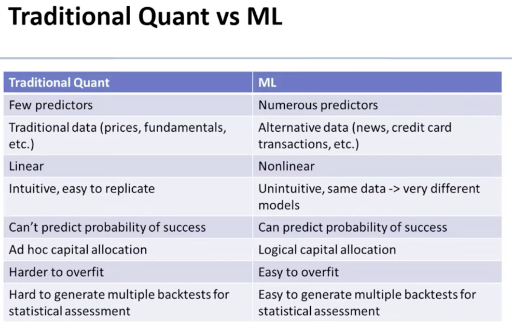

Quantitative Research and Machine Learning
I think of myself as a Machine Learning (ML) person with my most recent application domain being finance. However, I’ve worked alongside “Quants”.
According to ChatGPT: “In finance, a “quant” (short for quantitative analyst) is a professional who uses mathematical models, statistical techniques, and computer programming to analyze financial markets and securities. Quants develop algorithms and trading strategies to identify profitable opportunities and manage risk. They often work for investment banks, hedge funds, and other financial institutions, focusing on areas such as derivatives pricing, risk management, and algorithmic trading.”
After spending some time with them, I have noted some key differences in the way they work and how I do it. This post describes some aspects that quantitative analysts/researchers do very well that we (ML people) should keep in mind even when not dealing with financial data.
Simplicity-driven
Let’s start with a quote from Nick Patterson who worked at Rennaisance Technologies:
…It’s funny that I think the most important thing to do on data analysis is to do the simple things right. So, here’s a kind of non-secret about what we did at Renaissance: in my opinion, our most important statistical tool was simple regression with one target and one independent variable. It’s the simplest statistical model you can imagine. Any reasonably smart high school student could do it. Now we have some of the smartest people around, working in our hedge fund, we have string theorists we recruited from Harvard, and they’re doing simple regression. Is this stupid and pointless? Should we be hiring stupider people and paying them less? And the answer is no. And the reason is nobody tells you what the variables you should be regressing [are]. What’s the target. Should you do a nonlinear transform before you regress? What’s the source? Should you clean your data? Do you notice when your results are obviously rubbish? And so on. And the smarter you are the less likely you are to make a stupid mistake. And that’s why I think you often need smart people who appear to be doing something technically very easy, but actually usually not so easy. [Reference]
Let’s know continue with the wonderful post Eugene Yan wrote about “Simplicity is An Advantage but Sadly Complexity Sells Better” where he articulates many Machine Learning examples concluding with “the objective should be to solve complex problems with as simple a solution as possible."
The sad reality is that in ML, sometimes we try to overcomplicate things just because we can. Nowadays, GPUs are largely available (even you can use them for free in something like Google Colab), packages like Pytorch, Keras and Scikit-learn are extremely simple to use, and data is generally abundant (maybe you don’t know the old UCI datasets, but you probably know about Kaggle). This has led to a bias toward always overcomplicating things from the beginning without considering any additional requirements or trade-offs.
In contrast, I’ve seen quants develop truly informative models with 1) a clear hypothesis (more on that later), 2) linear regression, and 3) a clean dataset.
Note that I am not arguing against using state-of-the-art models, but when solving a real problem, I would be more inclined to start with something simpler while considering many other aspects (cost, scalability, constraints, etc.).
Skeptical/Cynical attitude
Let’s consider two quotes in the context of evaluating (backtesting) Machine Learning models for Finance:
“The large amount of data allows for multiple layers of cross-validation, which minimizes the risk of overfitting. We are not so lucky in finance. Our data are limited."1
“The most common mistake is being seduced by the data into thinking a model is better than it is."1
I’ve seen firsthand how the nature of quants is to be skeptical. If your model seems to be doing well in most metrics, their first thought is 1) something is wrong, followed by, 2) you are overfitting.
When dealing with financial data, most evaluations are performed via backtesting, where essentially we can replay the data/experiment. The issue is that that replay is just one trajectory of a distribution. Numerous papers and books are devoted to properly using backtesting in finance. Below are a few quotes from Marcos Lopez de Prado on the importance/dangers of overfitting:
“… Backtest overfitting is arguably the most important open problem in all of mathematical finance. It is our equivalent to “P versus NP” in computer science."2
“… ML is a great weapon in your research arsenal, and a dangerous one to be sure."2
To me, the following paragraph summarizes the main problem of repeating the same evaluation over and over without additional considerations:
“One of the most pervasive mistakes in financial research is to take some data, run it through an ML algorithm, backtest the predictions, and repeat the sequence until a nice-looking backtest shows up. Academic journals are filled with such pseudo-discoveries, and even large hedge funds constantly fall into this trap. It does not matter if the backtest is a walk-forward out-of-sample. The fact that we are repeating a test over and over on the same data will likely lead to a false discovery."2
Doing ML with financial data sounds rather grim… and kind of is. Most of the time, nothing works, and when it works, it’s probably because you overfit. After all, it’s very tempting (and easy) to repeat experiments until the backtest improves because it seems similar to hyperparameter tuning and model validation in ML, but it is not.
Hypothesis-based
So, now the question arises: How do quants do their analysis if they don’t trust anything? Well, they do science… They follow a scientific approach based on hypothesis-experiments-evaluation. In their setting, it is common to talk about (economic or market) hypotheses that you will test.
Establish an Ex Ante Economic Foundation: A hypothesis is developed, and the empirical tests attempt to find evidence inconsistent with the hypothesis—so-called falsifiability 1
Another way of dealing with the backtest problem is to slightly change the way the analysis is done. What becomes important are the features and how they change (with respect to the hypothesis).
Once we have found what features are important, we can learn more by conducting a number of experiments. Are these features important all the time, or only in some specific environments? What triggers a change in importance over time? Can those regime switches be predicted? Are those important features also relevant to other related financial instruments? Are they relevant to other asset classes? What are the most relevant features across all financial instruments? What is the subset of features with the highest rank correlation across the entire investment universe? This is a much better way of researching strategies than the foolish backtest cycle.2
It is so important that it is stated as the first rule of backtesting:
MARCOS’ FIRST LAW OF BACKTESTING—IGNORE AT YOUR OWN PERIL “Backtesting is not a research tool. Feature importance is.”2
In summary, quants usually start with a hypothesis to test, use simple models, and are skeptical of their results. Those characteristics are no different from what ML practitioners should do; however, ML tends to work without clear hypotheses, leading to overcomplicated models and being overly enthusiastic about results.
Something extra:

“Differences between Quant and ML, from https://youtu.be/BhaJVZNpL4M?si=K5MmJqt6TJeIfbEs"
–